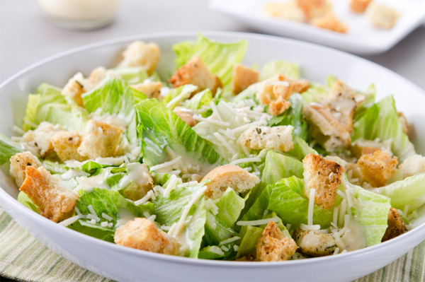

Chocolate Chip Cookies

Ingredients
- 1/2 cup (1 stick) unsalted butter
- 3/4 cup packed dark brown sugar
- 3/4 cup sugar
- 2 large eggs
- 1 teaspoon pure vanilla extract
- 1 (12-ounce) bag semisweet chocolate chips, or chunks
- 2 1/4 cups all-purpose flour
- 4 teaspoon baking soda
- 1 teaspoon fine salt
Directions
Evenly position 2 racks in the middle of the oven and preheat to 375 degrees F. (on convection setting if you have it.) Line 2 baking sheets with parchment paper or silicone sheets. (If you only have 1 baking sheet, let it cool completely between batches.)
Put the butter in a microwave safe bowl, cover and microwave on medium power until melted. (Alternatively melt in a small saucepan.) Cool slightly. Whisk the sugars, eggs, butter and vanilla in a large bowl until smooth.
Whisk the flour, baking soda and salt in another bowl. Stir the dry ingredients into the wet ingredients with a wooden spoon; take care not to over mix. Stir in the chocolate chips or chunks.
Scoop heaping tablespoons of the dough onto the prepared pans. Wet hands slightly and roll the dough into balls. Space the cookies about 2-inches apart on the pans. Bake, until golden, but still soft in the center, 12 to 16 minutes, depending on how chewy or crunchy you like your cookies. Transfer hot cookies with a spatula to a rack to cool. Serve.
Posted by Betty on July 1st, 2016
Grilled Cheese Sandwich

Ingredients
- 4 slices white bread
- 3 tablespoons butter, divided
- 2 slices Cheddar cheese
Directions
Preheat skillet over medium heat. Generously butter one side of a slice of bread. Place bread butter-side-down onto skillet bottom and add 1 slice of cheese. Butter a second slice of bread on one side and place butter-side-up on top of sandwich. Grill until lightly browned and flip over; continue grilling until cheese is melted. Repeat with remaining 2 slices of bread, butter and slice of cheese.
Posted by Betty on June 24th, 2016
Caesar Salad
Ingredients
- 1/4 cup grated Parmesan cheese
- 1/4 cup mayonnaise
- 2 tablespoons milk
- 1 tablespoon lemon juice
- 1 tablespoon Dijon-mayonnaise blend
- 1 garlic clove, minced
- Dash cayenne pepper
- 1 bunch romaine, torn
Directions
In a small bowl, whisk the first seven ingredients. Place romaine in a large bowl. Drizzle with dressing and toss to coat. Serve with salad croutons and additional cheese if desired.